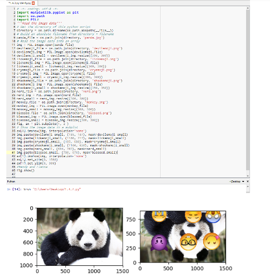

Home
Portfolio
About me
All the projects i've done so far
This is the game project I did together with Karl Kao called RPG Slayer where u fight monsters and earn gold! ...forever
This one is another project I did with Karl Kao. It's a remix of a maze in Scratch. We added moving fireballs and a fire wall!
After getting a new partner named Haytham Gaber our first remix in mit.app was Mole mash!

My first project in mit.app with a new partner named Haytham Gaber. Our app is called Remind.Me It's a time management app where it's basically a to do list with a built in timer.

After finishing up with mit.app we went to work with phython. Our assignment was to make a choose your path story and I did this with a new partner named miles but, The one presented here is a remix that I myself made!
This is python, its horrible. I want to cry, easier than scratch but theres so many open things to use its like?! but anyways heres my 1.4.7 image artist creation w/ Wendy
